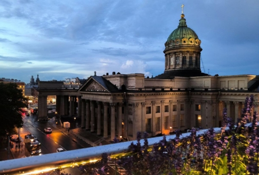
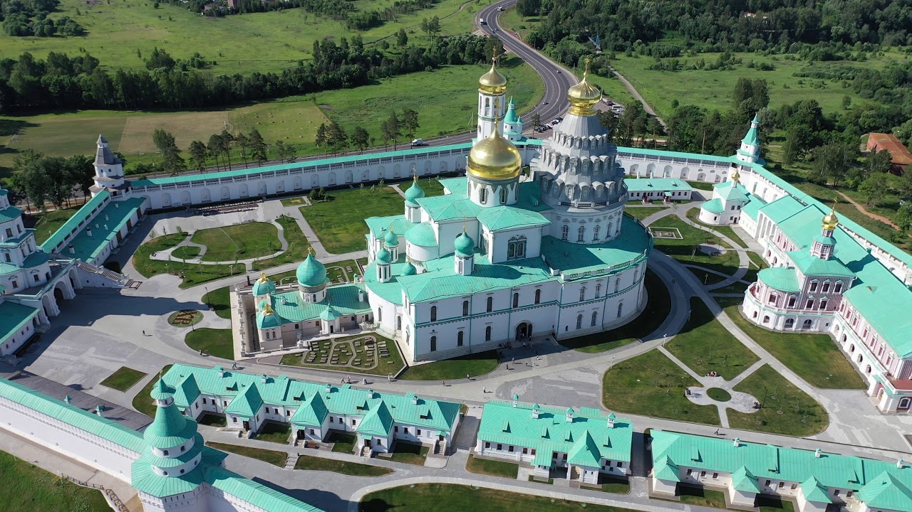

Музей
Выберите музей
Маршруты прогулки по музею
Откройте тайны
Экскурсии по самым величественным музеям города с профессиональным гидом!
Забронировать местоСписок музеев каталога

Государственный Эрмитаж в Санкт-Петербурге — роскошная сокровищница
Интересные факты
Домик Петра I на Петровской набережной — самое старинное здание Петербурга. Он построен в 1703 году. Спустя полтора века вокруг деревянного здания возведен защитный кирпичный футляр с окнами. Здесь представлены сохранившиеся личные вещи императора. В 1941 году после начала Великой Отечественной войны большую часть коллекции Русского музея эвакуировали в Пермь (тогда город назывался Молотов). Оставшиеся экспонаты укрыли в подвалах дворца. За время войны ни одна картина не пострадала. В 2015 году первый филиал Русского музея открылся в Испании — в городе Малага, в Андалусии. Ежегодно здесь организуют три выставки, работает «Электронный Русский музей» с использованием современных электронных технологий

Государственный Русский музей в Санкт-Петербурге.
Интересные факты
Большой Эрмитаж — первое здание в России, созданное специально для размещения художественных коллекций музея. За произведениями искусства здесь присматривают не только люди. На службе в Эрмитаже — около 50 кошек. Животные нужны, чтобы защитить экспонаты от мышей. Эта традиция сохраняется еще со времен правления Екатерины II. Один из самых известных шедевров Эрмитажа — «Даная» Рембрандта. В 1985 году психически нездоровый турист облил картину кислотой. 12 лет реставраторы восстанавливали картину. Сейчас она снова доступна для любования, только теперь защищена бронированным стеклом
Исаакиевский собор в Санкт-Петербурге. Найдите свой вариант отдыха
Интересные факты
Исаакиевский собор — самое тяжелое здание в Санкт-Петербурге. По сей день ему пророчат обрушение и уход в болото. Но он до сих пор крепко на земле. Многие из тех, кто побывал на освящении, все же не оценили Исаакиевский собор. Первое время из-за пропорций храм носил прозвище Чернильница. Однако сейчас его почитают как самый величественный в городе. По легенде, дом Романовых должен был пасть после снятия строительных лесов с собора. Окончательно их сняли в только в 1916 году, а в марте 1917-го Николай II отрекся от престола

Казанский собор в Санкт-Петербурге
Интересные факты
Особенностью собора было то, что строили его исключительно из материалов отечественного производства. Ничего привозного, сплошное импортозамещение. Тут вам и известняк, и гранит и мрамор — все свое. А вот архитектура как раз, наоборот, далека от русской. Казанский собор строили в стиле ампир. Павел Первый хотел, чтобы храм напоминал Собор Святого Павла в Риме. Освятили храм в 1811 году, и через полгода сюда привезли Казанскую икону Божией матери

Воскресенский Ново-Иерусалимский монастырь
Интересные факты
Монастырь был основан в 1656 году Патриархом Никоном. Село Воскресенское было куплено в вотчину Иверского монастыря. В 1657 году храм освятили в присутствии царя Алексея Михайловича, который воскликнул: «Во истину благоговоли Бог исперва место сие предуготовать на создание монастыря; понеже прекрасно, подобно Иерусалиму». В 1666 году Патриарх Никон покидает монастырь, чтобы явиться на суд, после чего строительные работы на долгое время прекращаются.